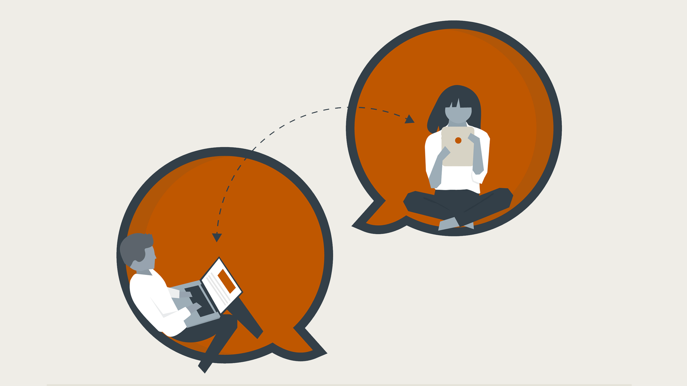
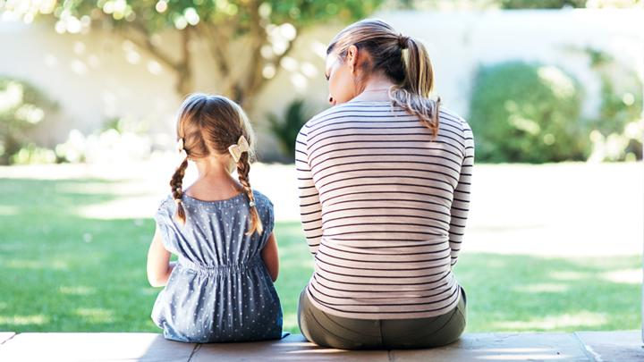

Tenk anderledes om ensomheten
Dette rådet gjelder nok ikke for alle, men noen kan klare å se på ensomheten i et nytt lys.
Å tenke anderledes på hva det vil si å være alene, kan noen ganger gjøre det lettere å kjenne på følelser av ensomhet.
De fleste mennesker trenger nære relasjoner for å trives. Psykologen Abraham Maslow anså dette behovet som så viktig at han rangerte kjærlighet og tilhørighet sammen med mat og bolig i sitt hierarki over grunnleggende menneskelige behov.
Men det trenger ikke å være feil men en viss grad av ensomhet - eller kvalitetstid alene. Ensomhet skaper muligheter for selvoppdagelse, kreativ tanke og selvrefleksjon.
Tid alene kan også åpne for større oppmerksomhet, noe som kan øke følelsesmessig bevissthet.
Neste gang ensomheten dukker opp - kan du prøve å godta det som kommer? Kanskje du setter på musikk og henter en glemt skissetavle, blar gjennom gamle notatbøker og gjenoppdager en gammel hobby?
Det handler om å finne måter å få mest mulig ut av alenetiden på - og bruke den til din fordel.
Referanse

Skru opp lyden!
Musikk kan gi bedre humør, lydbøker kan føre tankene over på noe annet.
Podcaster og radio informerer og underholder, og har kanskje en samtaleatmosfære som gir en følelse av fellesskap.
Å åpne vinduet for å høre fugler og forbipasserende kan gi en følelse av å være en del av verden der ute.
Referanse

Hold kontakten
Det er ikke alltid mulig å tilbringe tid med venner og familie, men du kan fremdeles opprettholde kontakten, selv når du ikke kan treffe dem personlig. Dette er en samværsform som vil være annerledes, men det er tilhørigheten som er viktig:
Det å regelmessig være i kontakt med mennesker som betyr noe for deg.
Ikke undervurder effekten av en telefonsamtale og kraften i en kjær stemme. Selv en samtale på 10 minutter kan bidra til å lette ensomhet - både for deg og dem.
Referanse
Få mest mulig ut av møtene du har
Kvaliteten på samværet betyr gjerne mer enn hvor ofte du tilbringer tid med andre. Man kan føle seg ensom i en stor gruppe uformelle bekjente, men oppleve sterk tilhørighet en stille kveld med din nærmeste venn.
Hvordan du tilbringer tid med andre, kan også gjøre en stor forskjell. Noen ganger kan det hende du bare trenger selskap, kanskje se en film med en venn.
Men andre ganger er det behov for å ha samvær på et dypere nivå. Da kan du prøve å finne måter å gjøre samværet mer meningsfylt:
Del følelser og personlige opplevelser.
Still spørsmål, og lytt skikkelig til hva vennene dine sier.
Snakk om ting som betyr noe - arbeid, kreative prosjekter, felles interesser.
Det er vanskelig å helt unngå å snakke om aktuelle hendelser i nyhetsbildet. Likevel kan det hjelpe å sentrere samtalene om ting som gir dere begge gleder i stedet for å diskutere bekymringsfulle nyheter.
Referanse
Kom deg ut
Tid i naturen kan gi bedre humør og øke det generelle velværen.
Besøk en park - se etter forskjellige fugler - kan du navnet på dem? Både fugler og fuglesang kan ha en positiv innvirkning på velvære.
Ta en tur rundt i nabolaget ditt. Utforsk gater du aldri har besøkt, og hils på naboer.
Besøk og støtt lokale virksomheter.
Å gå eller sykle turer kan også gi bedre søvn. Å sove dårlig kan påvirke funksjonen på dagtid, noe som igjen kan øke følelsen av isolasjon.
Referanse

Snakk om følelsene dine
Følelser har en tendens til å samles under overflaten og forsterke seg når de ikke blir løftet fram.
Å fortelle en god venn at du føler deg ensom kan gjøre det lettere, og du kan få viktig støtte og hjelp. Å snakke om vanskelige følelser kan også føre til at dine nærmeste deler følelser de selv sliter med. Dette gir dere en mulighet til å utforske mestringsstrategier sammen.
Men å dele tankene sine kan være vanskelig, spesielt hvis du ikke er vant til å snakke om følelser. Å skrive dem ned kan være nyttig. Slik kan du sortere følelsen for deg selv først, før du deler dette med andre.
Referanse
Finn din kreative side
Kreative sysler som kunst, musikk og skriving hjelper mange mennesker til å takle isolasjon og navigere i følelser av ensomhet.
Å skape noe kan gjøre deg tilfreds, og kanskje skyve bort dårlig humør og tristhet. Kanskje har du hørt om "flytsonen"?. Dette kan du oppnå når du utfordrer deg selv med en aktivitet du brenner for.
Å finne flyt betyr å nå et punkt der distraherende følelser (som ensomhet) midlertidig forsvinner, slik at du fullt ut kan fokusere på det du holder på med.
Referanse

Har du vurdert å få et kjæledyr?
Ikke alle har råd eller mulighet til å ha et kjæledyr, så dette tipset gjelder ikke for alle.
Men forskning viser at det å ha et dyr kan forbedre både mental og fysisk velvære. Et kjæledyr er et levende vesen som med sin tilstedeværelse kan gi mye trøst.
Har du en hund, må du dra ut med jevne mellomrom og kanskje kan også dette bidra til fellesskap med andre mennesker.
Referanse
Ta en pause fra sosiale medier
Mens sosiale medier ofte virker som en god måte å opprettholde kontakten med venner på, kan det noen ganger øke følelsen av ensomhet.
Er vennene dine sine innlegg på sosiale medier full av lykke og bekymringsløshet, kan dette gi inntrykk av at de ikke savner deg like mye som du savner dem. Når du er alene, kan det også være vondt å se andre tilbringe tid med partnere eller familiemedlemmer.
Selvfølgelig viser sosiale medier aldri hele bildet, så du kan egentlig ikke vite hva vennene dine føler uten å spørre. Det er nok sjelden feil å koble seg litt fra sosiale medier og ta en telefonsamtale eller skrive en melding i stedet.
Referanse
Gjør noe du liker
Ensomheten kan ta mye plass og det kan bli vanskelig å tenke på noe annet - til og med på de tingene du vanligvis liker å gjøre.
Hvis pandemien setter en stopper for at du kan være med andre, prøv å gjøre noe du liker i mellomtiden: yoga, spille spill, bake. En følelse av normalitet kan hjelpe deg med å fine en indre ro. Hobbyer og avslappende aktiviteter fungerer også som egenomsorg.
Referanse